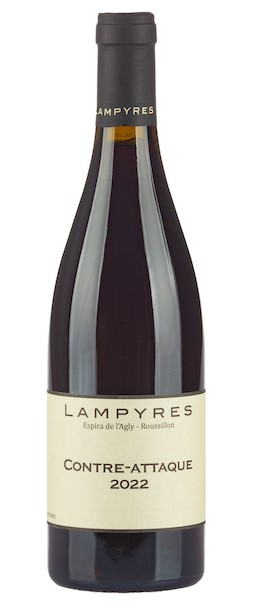

Lampyres
Contre-Attaque (2022)
Sélection de Yannick :
"Le Lampyre contre-attaque est un vin exceptionnel qui séduit par sa complexité et son équilibre parfait. Ses arômes riches de fruits noirs et d'épices offrent une expérience gustative inoubliable. C'est un choix idéal pour accompagner vos repas les plus raffinés."
Un vin rouge d'exception, riche en saveurs et en histoire. Profitez de ce vin élégant et raffiné, parfait pour toutes les grandes occasions. Disponible en stock limité, ne manquez pas l'opportunité de savourer cette merveille.
Disponibilité: Disponible en stock limité
| Informations sur le vin | |
|---|---|
| Domaine viticole | Lampyres |
| Cépages | Mourvedre |
| Région | France / Languedoc-Roussillon / Côtes du Roussillon |
| Style de vin | Vin rouge du Languedoc-Roussillon |
| Teneur en alcool | 13 % |
| Allergènes | Contient : sulfites |